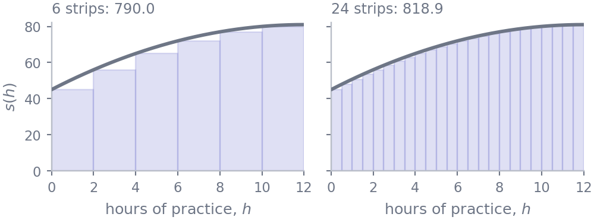
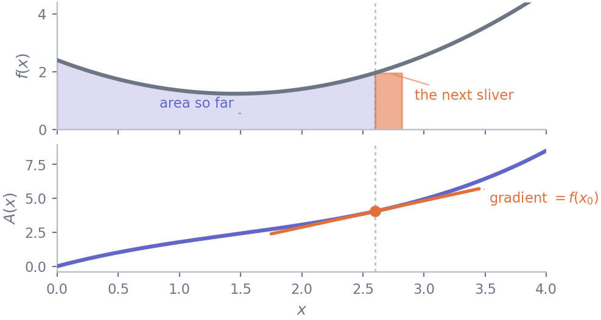
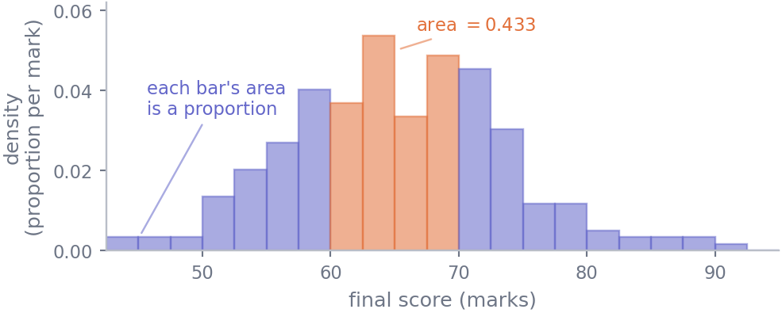

22 Accumulation and area
Mathematics · Unit 7
Why this unit is here
A derivative answers how fast is this changing? This unit answers the opposite question: how much has accumulated? Given a rate, what is the total; given a curve, what is the area underneath it.
You need this for one reason above all others. In the Statistics track a continuous quantity is described by a density, and a density on its own is not a probability — you get a probability by taking the area under it between two values. Every statement of the form “about 43% of the cohort scored between 60 and 70” is an area, and from S5 onwards you will be reading them constantly. The other half of the unit is the fact that makes areas computable at all: accumulation and differentiation are inverse operations.
22.1 Before you start
You should be able to:
- differentiate with the rules — M4;
- read a derivative as a rate carrying units — M3;
- work with \(e^x\) and \(\ln x\) — M2;
- add up a NumPy array with
.sum()— P7.
Quick check. Differentiate \(F(x) = \tfrac{1}{3}x^3 - 2x\).
TipShow the answer
\[F'(x) = x^2 - 2.\]
Now read that backwards: you have just found a function whose derivative is \(x^2 - 2\). Going in that direction — from a rate back to the thing that accumulated it — is what this unit is about, and by the end of it you will see that \(\tfrac{1}{3}x^3 - 2x\) is exactly what computes areas under \(x^2 - 2\).
22.2 The idea
Start with a rate that does not change. If water runs into a tank at a steady 5 litres per minute for 12 minutes, the total is \(5 \times 12 = 60\) litres. Draw the rate against time and that total is the area of a rectangle: height times width.
Now let the rate vary, and the trick is to pretend for a moment that it does not. Chop the 12 minutes into short strips. Across one short strip the rate barely changes, so treat it as constant, and that strip contributes about (rate) \(\times\) (width) — a rectangle. Add the rectangles up and you have an estimate of the total. Take narrower strips and the estimate improves.
Here is that estimate for the score model of M3, \(s(h) = 45 + 6h - 0.25h^2\), over \(0 \le h \le 12\), using six strips and then twenty-four:
def s(h):
return 45 + 6*h - 0.25*h**2
import numpy as np
for n in [6, 24, 100, 1000, 100_000]:
left_edges = np.linspace(0, 12, n + 1)[:-1]
print(f"{n:>7} strips estimate {s(left_edges).sum() * 12/n:12.6f}") 6 strips estimate 790.000000
24 strips estimate 818.875000
100 strips estimate 825.832800
1000 strips estimate 827.783928
100000 strips estimate 827.997840The estimates settle on 828, in the same way that the difference quotients of M3 settled on 4. There the interval shrank towards a point; here the strips shrink towards zero width and there are ever more of them. The value they settle on is the integral of \(s\) from 0 to 12, written
\[ \int_{0}^{12} s(h)\,dh \;=\; 828 . \]
Two readings, as with the derivative. Geometrically it is the area between the curve and the horizontal axis, between those two limits. Practically it is a total accumulated from a rate: here, marks-per-student summed over an interval of hours, so the answer carries units of marks \(\times\) hours. An integral always carries the units of the thing being integrated multiplied by the units of the variable you integrate over.
22.3 The mechanics
22.3.1 Notation
\[ \int_{a}^{b} f(x)\,dx \]
The \(\int\) is an elongated S, for sum. The \(dx\) is the width of a strip, and it also tells you which variable you are accumulating over — which matters as soon as there is more than one symbol in play. \(a\) and \(b\) are the limits. This is a definite integral: limits attached, and the answer is a number.
Two properties fall straight out of the picture:
- Area below the axis counts as negative. A strip where \(f\) is negative has negative height, so it subtracts. The integral is a signed area, and it can be zero for a function that is nowhere zero.
- Swapping the limits flips the sign, so \(\int_b^a f = -\int_a^b f\). Strips of negative width.
22.3.2 The fundamental theorem
Adding up ever more rectangles is a terrible way to get an exact answer. The theorem that rescues it is the most useful result in this half of the subject.
Fix the left limit and let the right one move. Define the accumulation function
\[ A(x) = \int_{a}^{x} f(t)\,dt , \]
the area collected so far when you have got as far as \(x\). (The variable inside had to be renamed: \(t\) runs across the strips while \(x\) marks where you stopped. They cannot both be \(x\).)
Now nudge \(x\) by a small amount \(h\). The extra area is a sliver of width \(h\) and height about \(f(x)\), so \(A(x + h) - A(x) \approx f(x)\,h\), and therefore
\[ A'(x) = \lim_{h \to 0} \frac{A(x+h) - A(x)}{h} = f(x). \]
The sliver argument needs \(f\) to be continuous at \(x\): if \(f\) jumps there, the sliver has no single height and \(A\) has a corner instead of a tangent. Every \(f\) in this unit is continuous, and the result is stated for that case.
Accumulating and differentiating undo each other. That is the fundamental theorem of calculus, and its practical form is: if you can find any \(F\) with \(F' = f\), then
\[ \int_{a}^{b} f(x)\,dx \;=\; F(b) - F(a), \]
usually written \(\bigl[F(x)\bigr]_a^b\). Such an \(F\) is called an antiderivative of \(f\).

22.3.3 The antiderivative table
Every line of it is a line of M4’s table read from right to left.
| \(f(x)\) | an antiderivative \(F(x)\) | |
|---|---|---|
| \(c\) | \(cx\) | check: \((cx)' = c\) |
| \(x^{n}\), \(n \neq -1\) | \(\dfrac{x^{n+1}}{n+1}\) | raise the power, divide by the new one |
| \(\dfrac{1}{x}\) | \(\ln\lvert x \rvert\) | the case the power rule cannot do |
| \(e^{x}\) | \(e^{x}\) | its own antiderivative, as it is its own derivative |
Sums and constant multiples pass through unchanged: \(\int (f + cg) = \int f + c \int g\). There is nothing so convenient for products or quotients — the chain rule and product rule run backwards into methods (substitution, integration by parts) that these notes do not need.
Antiderivatives are not unique: \(F(x) + C\) works for any constant \(C\), because a constant differentiates to zero. Hence the \(+ C\) you may remember. For a definite integral it cancels — \(\bigl(F(b) + C\bigr) - \bigl(F(a) + C\bigr)\) — so you may drop it, and this unit does.
22.3.4 Where this stops working
Plenty of ordinary functions have no antiderivative expressible in the usual symbols. The one that matters most is \(e^{-x^2}\), whose area is the whole business of the normal distribution in S6. No amount of cleverness will produce a formula for it. Such integrals are computed numerically, by a better-organised version of the strips above, and the last section of this unit does exactly that.
22.4 Worked example
Part 1: an average, from an integral. Over the first 12 hours of practice, what score does the model of M3 predict on average? Not the average of a few sampled points — the average over the whole continuous range, which is the accumulated total divided by the width:
\[ \text{average} = \frac{1}{b - a}\int_{a}^{b} f(x)\,dx . \]
An antiderivative of \(s(h) = 45 + 6h - 0.25h^2\), term by term from the table:
\[ S(h) = 45h + 3h^{2} - \frac{h^{3}}{12}. \]
Evaluate at both limits:
\[ \int_{0}^{12} s(h)\,dh = \Bigl[45h + 3h^{2} - \tfrac{1}{12}h^{3}\Bigr]_{0}^{12} = (540 + 432 - 144) - 0 = 828 , \]
which is the number the strips were converging on. The average is \(828 / 12 = 69.0\) marks — and note the units working: marks \(\times\) hours, divided by hours, gives marks.
Part 2: a proportion, from an area. Now the cohort itself. A histogram drawn with density=True has bar heights in proportion of the cohort per mark, chosen so that the total area of the bars is exactly 1. An area under it is then a proportion.
import pandas as pd
cohort = pd.read_csv("../data/cohort.csv")
scores = cohort[cohort["final_score"].between(0, 100)]["final_score"].to_numpy()
edges = np.arange(42.5, 100.1, 2.5)
heights, edges = np.histogram(scores, bins=edges, density=True)
widths = np.diff(edges)
within = (edges[:-1] >= 60) & (edges[:-1] < 70)
print(f"{len(scores)} scores, {len(widths)} bars {widths[0]} marks wide")
print(f"total area under the bars {(heights * widths).sum():.6f}")
print(f"area of the bars from 60-70 {(heights[within] * widths[within]).sum():.6f}")
print(f"proportion scoring 60-70 {((scores >= 60) & (scores < 70)).mean():.6f}")238 scores, 23 bars 2.5 marks wide
total area under the bars 1.000000
area of the bars from 60-70 0.432773
proportion scoring 60-70 0.432773The last two numbers are equal, and that is the whole point: the area under a density between two values is the proportion of the data between them. The tallest bar here is only about 0.054, and reading that as a count or a probability is the standard mistake: it is a proportion per mark, and nothing stops such a height rising above 1. Express the same scores as fractions of full marks rather than in marks and the horizontal axis compresses by a factor of 100, so every height multiplies by 100.

22.5 Try it yourself
Exercise 1 Evaluate \(\displaystyle\int_{1}^{3} (2x + 1)\,dx\), then check the answer without calculus.
TipShow the solution
An antiderivative is \(F(x) = x^2 + x\), so
\[\int_{1}^{3}(2x+1)\,dx = \bigl[x^2 + x\bigr]_1^3 = (9 + 3) - (1 + 1) = 10.\]
The check: \(y = 2x + 1\) is a straight line, so the region under it between \(x = 1\) and \(x = 3\) is a trapezium with parallel sides \(f(1) = 3\) and \(f(3) = 7\) and width 2. Its area is \(\tfrac{1}{2}(3 + 7) \times 2 = 10\).
Do this whenever the shape is one you know. Geometry and the antiderivative are computing the same thing, and disagreement means one of them is wrong.
Exercise 2 Evaluate \(\displaystyle\int_{0}^{2} (x - 1)\,dx\). Then explain the answer.
TipShow the solution
\[\int_{0}^{2}(x-1)\,dx = \Bigl[\tfrac{1}{2}x^2 - x\Bigr]_0^2 = (2 - 2) - 0 = 0.\]
Zero, although \(x - 1\) is zero only at the single point \(x = 1\). Between 0 and 1 the function is negative and contributes \(-\tfrac12\); between 1 and 2 it is positive and contributes \(+\tfrac12\); they cancel exactly.
The tempting reading is “the area under the curve is zero”, which is false: the region between the line and the axis has area 1. The integral is a signed area. If you want the geometric area, integrate \(\lvert x - 1 \rvert\), or split at the crossing point and add the pieces without their signs.
Exercise 3 Water flows into a tank at a rate \(r(t)\) litres per minute, where \(t\) is minutes since you started watching. You are told that \(\displaystyle\int_{0}^{30} r(t)\,dt = 450\).
Say in one sentence, with units, what that means — and then say what it does not tell you.
TipShow the solution
450 litres flowed in during the first 30 minutes. The units come out of the integral itself: litres per minute, multiplied by minutes.
What it does not tell you:
- the rate at any particular moment. The average was 15 litres per minute, but the flow could have been steady, or a torrent for two minutes and a trickle after. Totals do not determine rates, exactly as in M3 a rate did not determine a total.
- how much is in the tank. The integral measures what flowed in over that window. Without the starting volume — and without knowing whether anything drained out — you cannot get a level from it.
This is the mirror image of Exercise 3 in M3, and worth holding side by side with it: a rate says nothing about a level, and a total says nothing about an instant.
22.6 Check it in Python
The claim to test is the fundamental theorem: that evaluating an antiderivative at the two limits gives the same number as adding up strips. Two ways of adding up strips, in fact — the crude left-edge rectangles from earlier, and the trapezoid rule, which joins consecutive points with a straight line instead of a flat one, so each strip follows the slope of the curve rather than ignoring it.
def left_rectangles(f, a, b, n):
edges = np.linspace(a, b, n + 1)
return f(edges[:-1]).sum() * (b - a)/n
def trapezoid(f, a, b, n):
y = f(np.linspace(a, b, n + 1))
return (y[0]/2 + y[1:-1].sum() + y[-1]/2) * (b - a)/n
def S(h): # our antiderivative, by hand
return 45*h + 3*h**2 - h**3/12
exact = S(12) - S(0)
print(f"antiderivative: S(12) - S(0) = {exact}")
for n in (4, 16, 64, 1024):
print(f" n={n:>5} rectangles {left_rectangles(s, 0, 12, n):11.5f}"
f" trapezoid {trapezoid(s, 0, 12, n):11.5f}")antiderivative: S(12) - S(0) = 828.0
n= 4 rectangles 769.50000 trapezoid 823.50000
n= 16 rectangles 814.21875 trapezoid 827.71875
n= 64 rectangles 824.60742 trapezoid 827.98242
n= 1024 rectangles 827.78899 trapezoid 827.99993Both converge on 828, and the trapezoid rule with 64 strips is already closer than the rectangles with 1024 — a sixteenth of the work for a tenth of the error. The method matters as much as the number of strips, which is the lesson of M3’s numerical derivative arriving from the other direction.
Now the integral that has no antiderivative. Over the whole real line, \(\int_{-\infty}^{\infty} e^{-x^2}\,dx = \sqrt{\pi}\), a fact you cannot get to by any manipulation of the table above:
gauss = lambda x: np.exp(-x**2)
for limit, n in [(3, 1_000), (6, 100), (6, 1_000), (6, 100_000)]:
estimate = trapezoid(gauss, -limit, limit, n)
print(f"over [-{limit}, {limit}] with n={n:>7} {estimate:.10f}"
f" matches sqrt(pi): {np.isclose(estimate, np.sqrt(np.pi))}")over [-3, 3] with n= 1000 1.7724146921 matches sqrt(pi): False
over [-6, 6] with n= 100 1.7724538509 matches sqrt(pi): True
over [-6, 6] with n= 1000 1.7724538509 matches sqrt(pi): True
over [-6, 6] with n= 100000 1.7724538509 matches sqrt(pi): TrueThe first line is the one to study. It uses a thousand strips — ten times as many as the line below it, which lands on the right answer — and it is still wrong in the fifth decimal place, and adding strips will never fix it. The error is not in the step size but in the interval: cutting the curve off at \(\pm 3\) throws away real area in the tails. Two different things can go wrong with a numerical integral, and they need opposite responses.
22.7 Common wrong turns
Where this usually goes wrong
- Confusing the integral with the integrand
- \(r(t)\) is a rate in litres per minute; \(\int_0^{30} r(t)\,dt\) is a total in litres. They are different quantities in different units, exactly as \(f\) and \(f'\) are in M3.
- Assuming an integral cannot be negative
- It is a signed area. \(\int_0^2 (x-1)\,dx = 0\) even though the region between the line and the axis plainly has area 1.
- Reading a density as a probability
- A density has units — here, proportion of the cohort per mark — and its height can be any positive number at all, including numbers far above 1. Only its area is a probability, which is why this unit is a prerequisite for S5.
- Losing the constant of integration where it matters
- It cancels in a definite integral and you should drop it there. It does not cancel when you are reconstructing a quantity from its rate: knowing the flow into a tank gives you the change in level, and you still need one measured level to pin down \(C\).
- Expecting every function to have an antiderivative
- \(e^{-x^2}\) has none in elementary terms, and it is the single most important function in statistics. Failing to find a formula is often not a failure.
- Blaming the strip count for every numerical error
- Too few strips and too narrow an interval look alike — both give an answer that is a bit wrong. Only the first is cured by more strips. Change one thing at a time and watch which one moves the answer.
22.8 Check yourself
Answers are at the foot of the page. Give a reason as well as an answer.
What is \(\displaystyle\int_{0}^{2} 3\,dx\)?
- \(3\) b. \(6\) c. \(0\) d. \(3x\)
- \(\displaystyle\int_{1}^{e} \frac{1}{x}\,dx\) — evaluate it, and say which line of the antiderivative table you used and why the power rule is no help.
- A density curve for waiting times, measured in minutes, reaches a height of 1.8 at its peak. Is that a mistake? What would the height become if the same waiting times were measured in hours?
- \(F\) and \(G\) are both antiderivatives of the same \(f\), and \(F \neq G\). What can you say about \(F - G\), and why does the difference not affect \(\int_a^b f\)?
- Your trapezoid estimate of \(\int_{-3}^{3} e^{-x^2}\,dx\) sticks at \(1.77241\) no matter how many strips you use, while \(\sqrt{\pi} = 1.77245\). What is wrong, and what fixes it?
TipShow the answers
(b) \(6\). The region is a rectangle of height 3 and width 2. By the table, \(\bigl[3x\bigr]_0^2 = 6 - 0\). Option (a) forgets the width; (d) forgets that a definite integral is a number, not a function — the limits have been substituted in and \(x\) is gone.
1. \(\int \frac{1}{x}\,dx = \ln\lvert x\rvert\), so the answer is \(\ln e - \ln 1 = 1 - 0 = 1\). The power rule would want \(\frac{1}{x} = x^{-1}\) to become \(\frac{x^{0}}{0}\), which divides by zero. That single excluded case is the reason logarithms appear in the table at all.
Not a mistake. A density is a proportion per unit of the measurement — here, proportion of waiting times per minute — and nothing bounds its height — only its total area is fixed at
- Re-expressed in hours the horizontal axis compresses by a factor of 60, so heights multiply by 60 to keep the area at 1: the peak becomes about 108.
\(F - G\) is a constant. Both have derivative \(f\), so \((F - G)' = 0\), and only a constant has zero derivative everywhere on an interval. It does not affect the definite integral because it is added at \(b\) and subtracted at \(a\), cancelling.
The interval, not the strip count. Cutting off at \(\pm 3\) discards the tails of \(e^{-x^2}\), and that missing area is a fixed amount which no refinement of the strips can recover — it is why the estimate stops improving rather than converging slowly. Widening to \(\pm 6\) fixes it. The diagnostic habit worth taking away: if refining the mesh stops helping, the error is in the problem you set up, not in how finely you chopped it.